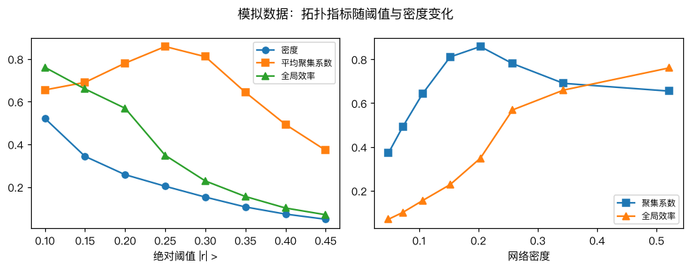
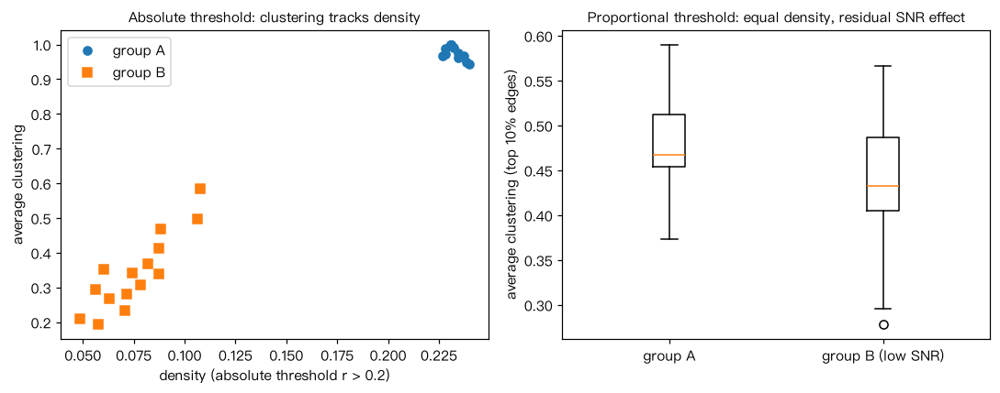
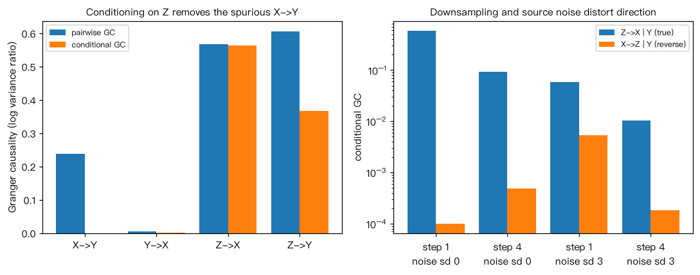
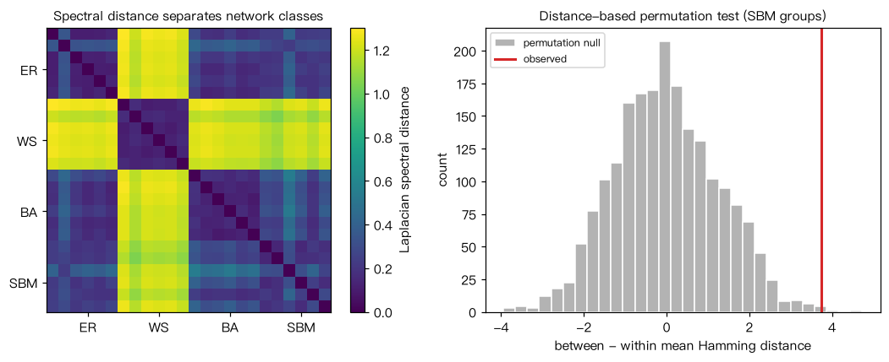

网络构建与统计验证
从影像、量表、表达谱和相互作用数据库到网络，再到可信结论：节点与边的定义、连接估计、阈值、零模型、统计推断与稳定性检验。
网络分析中最容易被低估的一步，是“网络从哪里来”。一个脑网络、症状网络、共表达网络或蛋白质相互作用网络，都不是直接测量得到的对象，而是一连串建模决定的产物：什么算一个节点，什么算一条边，边权用什么统计量估计，保留哪些边，和什么样的参照对象比较，用什么方法控制假阳性。每一步都可能改变后面所有的拓扑指标，因此“网络构建”本身就是一个需要报告、检验和论证的统计推断问题。
这一专题按数据流程组织：先讨论不同数据类型中节点与边的含义（节点与边的定义），再讨论边权的估计与估计误差（连接强度的估计）、从时间序列推断方向（从时间序列推断有向边）、从稠密矩阵到网络的稀疏化（阈值、加权与稀疏化）、边权误差如何传到指标上（边权不确定性向网络指标的传播），然后是三类验证：与零模型比较（零模型与空模型）、组间比较与多重比较控制（统计推断与多重比较、网络之间的距离与相似性）、对数据缺陷与结果稳定性的检查（测量误差、缺失与偏倚、采样网络与不完整观测、稳定性与可重复性），以及研究设计阶段的 样本量与统计功效。
它与 网络结构指标与随机图 互为前后：后者定义指标，这里讨论指标在什么条件下可以被解释。各应用领域的具体流程分别见 脑连接组、症状网络、基因调控网络推断 与 网络医学；分析报告的规范见 可复现分析与敏感性分析。
Contents知识页面
VIDEO讲解视频
文字稿
静息态功能磁共振，是让人在扫描仪里安静躺着，记录各个脑区的信号，随时间怎样起伏。 左边这张图，是一份模拟的静息态数据：三十个脑区，两两之间的相关系数。颜色越红，两个脑区的信号越同步。 要变成网络，得先决定保留哪些边。保留的边占全部可能边数的比例，叫密度。只保留最强的百分之五，网络是右边这个样子。 保留百分之十五，再保留百分之三十。同一份数据，右上角的聚集系数和全局效率，一路在变。 全局效率，衡量的是网络整体传递信息有多快：节点之间的距离越短，效率越高。 网络不是直接测出来的，而是一连串建模选择的产物。这一期要分清：哪些结构是真的，哪些是我们构建时造出来的。 这一期分三部分来讲。 第一部分，网络怎样构建：节点和边的定义，以及每条边的估计误差。 第二部分，阈值和零模型：阈值怎样定，指标又该和什么比较。 第三部分，统计推断和可靠性：多重比较、系统偏倚和稳定性。 先看第一部分。第一个选择是节点。同一个大脑，可以划分成几十个脑区，也可以划分成几百个。 研究发现，换一种划分尺度，小世界性、度分布这些指标，都会系统性地变化。所以不同研究之间，指标的绝对值很难直接比较。 第二个选择是边。边至少有四种不同的性质。 第一种是物理连接，比如蛋白质结合、白质纤维。第二种是统计关联，比如两个脑区信号的相关。 第三种是功能关联。比如蛋白质数据库，会把实验、共表达、文本挖掘等多种证据，整合成一个综合得分。 这样得到的网络里，边的数值代表证据的强弱，而不是作用的强弱。 第四种是因果或有向关系，比如转录因子调控靶基因。 它们回答的问题不同。比如在统计关联网络里，最短路径就没有明确的物理含义。 统计关联最常用的是相关系数。但相关会把间接关系也连成边。 设想甲影响乙，乙影响丙，甲和丙之间并没有直接作用。 可在模拟出来的数据里，右上角这张相关系数表显示，甲和丙的相关系数接近零点七。 偏相关，是在控制其余所有变量之后，再看两两之间的关联。下面这张偏相关表里，甲和丙之间几乎是零，这条边就消失了。 但是偏相关也有陷阱。如果甲和乙共同影响丙，甲和乙本来无关，相关系数接近零。 控制了丙之后，甲和乙反而出现了很强的负偏相关。所以偏相关更接近直接关联，但仍然不是因果。 第一部分的最后一个问题：每一条边都是估计出来的，带着误差。下面这条数轴是相关系数，金色虚线是真实值零点三。 只有三十个样本时，蓝色的置信区间跨过了零，连正负都说不准。置信区间，就是真实值大概率所在的范围。 一千个样本时，绿色的区间宽度只有零点一左右。区间宽度缩小一半，大约需要四倍的样本。 要以百分之八十的把握检测出零点三的相关，大约需要八十五个样本；如果真实相关是零点一，就要将近八百个。 下面进入第二部分。回到开头的问题：阈值应该怎样定。 先看密度的影响。这张图横轴是密度，纵轴是指标的数值。同一份数据，换一个密度，聚集系数和全局效率可以差得很远。 这会带来偏差。如果患者组整体连接偏弱，用同一个绝对阈值，也就是同一个相关系数的门槛，患者的网络就更稀疏。 这时两组指标的差异，其实只是密度的差异。 改用比例阈值、强制两组密度相同，又会为了凑够边数，纳入更多接近噪声的弱边，也就是红色这些边，让网络看上去更随机。 稳妥的做法，是在一段密度范围上报告结果，并且在看结果之前，就定好方案。 一个指标的数值本身很少有意义。比如聚集系数零点二五，是高是低，要看和什么比。 零模型，就是保留真实网络的某些性质，把其余部分随机化，生成很多参照网络。 看观测值落在参照分布的什么位置。偏离了几个标准差，叫标准分数，画面上记作z。 这张模拟网络的度相关系数是负零点三一，也就是异配。上面灰色的，是边数相同的随机图；观测值远在分布之外，标准分数约是负八。 下面绿色的，是保持度序列的随机网络，观测值落在了分布中间。也就是说，异配的大部分，度序列本身就能解释。 零模型选什么，决定了结论的含义。 最后是第三部分。比较患者和对照的网络时，如果逐条边检验，九十个脑区就有四千零五条边。 这么多检验，即使没有任何真实差异，也会冒出一批假阳性，就是这些红线。 一种办法是控制错误发现率，也就是控制在所有阳性结果里，假阳性所占的比例。 另一种是基于网络的统计：先用一个阈值挑出差异较大的边，看它们连成多大的一片。这里最大的一片有八条边。 再把组别标签打乱很多次，每次只记录最大那一片的大小，作为参照分布，看真实的这一片是不是异常地大。 要注意，这种方法的结论单位是整个子网络：可以说这片连接整体有差异，但不能说其中任何一条边单独显著。 还有一类误差，增加样本也消除不了，那就是系统性偏倚。 相互作用数据库记录的，是被研究过的相互作用。研究越多的蛋白，记录的伙伴越多，度就越高。这张示意图里，下面的柱子是发表的研究，上面的放射线是记录到的伙伴。 在脑影像里，哪怕毫米级的头动，也会系统性地增强近距离脑区的相关，削弱远距离的相关。 研究者为此比较了多种去除头动影响的处理策略。 最后是稳定性。有放回地重抽样被试，每次重新构建网络，看哪些边一直都在。 绿色的边几乎每次都在；金色的边时有时无。强度接近阈值的边，入选与否，几乎像抛硬币。 这样的边，不应该承载重要结论。 好，我们来总结一下。 第一，网络是建模选择的产物：节点、边、估计方法和阈值，都要交代清楚。 第二，指标要和合适的零模型比较，并且处理好多重比较。 第三，结论要经得起重抽样、换阈值和换数据的检验。
INTERACTIVE交互可视化
CODE计算实现
11 个完整可运行的 Python 示例，每个都给出代码、输出图和解读；可在浏览器中直接运行，或下载 Jupyter Notebook · Python 脚本 · 在 JupyterLite 中打开 ↗。

阈值敏感性——同一个相关矩阵，不同绝对阈值下的拓扑指标 保度随机化（双边交换）零模型、z 分数与经验 p 值
保度随机化（双边交换）零模型、z 分数与经验 p 值 置换检验比较两组网络——逐边 FDR 与基于网络的统计（NBS）
置换检验比较两组网络——逐边 FDR 与基于网络的统计（NBS） bootstrap 边稳定性与病例删除稳定性（偏相关网络）
bootstrap 边稳定性与病例删除稳定性（偏相关网络）
比例阈值与密度匹配——整体连接强度差异如何“制造”拓扑差异 样本量、Fisher z 置信区间，以及相关与偏相关的差别
样本量、Fisher z 置信区间，以及相关与偏相关的差别
从时间序列推断有向边——Granger 因果、条件 GC 与转移熵（高斯情形） 采样网络——随机节点采样、随机边采样与滚雪球采样如何改变度分布与其他指标
采样网络——随机节点采样、随机边采样与滚雪球采样如何改变度分布与其他指标 边权不确定性向网络指标的传播——块 bootstrap、边入选概率与“指标的均值 ≠ 均值网络的指标”
边权不确定性向网络指标的传播——块 bootstrap、边入选概率与“指标的均值 ≠ 均值网络的指标” 样本量与功效——单条边的解析计算、整网边恢复的模拟，以及测量信度造成的衰减
样本量与功效——单条边的解析计算、整网边恢复的模拟，以及测量信度造成的衰减
比较两张网络——已知节点对应的距离、谱距离、WL 图核，以及基于距离的置换检验Practice自测、练习与案例
References核心文献
零模型
- Maslov S, Sneppen K. Specificity and stability in topology of protein networks. Science, 2002, 296: 910–913. DOI: 10.1126/science.1065103
- Molloy M, Reed B. A critical point for random graphs with a given degree sequence. Random Structures & Algorithms, 1995, 6: 161–180. DOI: 10.1002/rsa.3240060204
- Fosdick BK, Larremore DB, Nishimura J, Ugander J. Configuring random graph models with fixed degree sequences. SIAM Review, 2018, 60: 315–355. DOI: 10.1137/16M1087175
- Rubinov M, Sporns O. Weight-conserving characterization of complex functional brain networks. NeuroImage, 2011, 56: 2068–2079. DOI: 10.1016/j.neuroimage.2011.03.069
- Zalesky A, Fornito A, Bullmore E. On the use of correlation as a measure of network connectivity. NeuroImage, 2012, 60: 2096–2106. DOI: 10.1016/j.neuroimage.2012.02.001
- Alexander-Bloch AF, Shou H, Liu S, et al. On testing for spatial correspondence between maps of human brain structure and function. NeuroImage, 2018, 178: 540–551. DOI: 10.1016/j.neuroimage.2018.05.070
- Váša F, Mišić B. Null models in network neuroscience. Nature Reviews Neuroscience, 2022, 23: 493–504. DOI: 10.1038/s41583-022-00601-9
连接估计与阈值
- Fisher RA. Frequency distribution of the values of the correlation coefficient in samples from an indefinitely large population. Biometrika, 1915, 10: 507–521. DOI: 10.2307/2331838
- Ledoit O, Wolf M. A well-conditioned estimator for large-dimensional covariance matrices. Journal of Multivariate Analysis, 2004, 88: 365–411. DOI: 10.1016/S0047-259X(03)00096-4
- Friedman J, Hastie T, Tibshirani R. Sparse inverse covariance estimation with the graphical lasso. Biostatistics, 2008, 9: 432–441. DOI: 10.1093/biostatistics/kxm045
- Smith SM, Miller KL, Salimi-Khorshidi G, et al. Network modelling methods for FMRI. NeuroImage, 2011, 54: 875–891. DOI: 10.1016/j.neuroimage.2010.08.063
- van Wijk BCM, Stam CJ, Daffertshofer A. Comparing brain networks of different size and connectivity density using graph theory. PLoS ONE, 2010, 5: e13701. DOI: 10.1371/journal.pone.0013701
- van den Heuvel MP, de Lange SC, Zalesky A, et al. Proportional thresholding in resting-state fMRI functional connectivity networks and consequences for patient-control connectome studies: issues and recommendations. NeuroImage, 2017, 152: 437–449. DOI: 10.1016/j.neuroimage.2017.02.005
- Tewarie P, van Dellen E, Hillebrand A, Stam CJ. The minimum spanning tree: an unbiased method for brain network analysis. NeuroImage, 2015, 104: 177–188. DOI: 10.1016/j.neuroimage.2014.10.015
统计推断
- Benjamini Y, Hochberg Y. Controlling the false discovery rate: a practical and powerful approach to multiple testing. Journal of the Royal Statistical Society: Series B, 1995, 57: 289–300. DOI: 10.1111/j.2517-6161.1995.tb02031.x
- Nichols TE, Holmes AP. Nonparametric permutation tests for functional neuroimaging: a primer with examples. Human Brain Mapping, 2002, 15: 1–25. DOI: 10.1002/hbm.1058
- Zalesky A, Fornito A, Bullmore ET. Network-based statistic: identifying differences in brain networks. NeuroImage, 2010, 53: 1197–1207. DOI: 10.1016/j.neuroimage.2010.06.041
- Phipson B, Smyth GK. Permutation p-values should never be zero: calculating exact p-values when permutations are randomly drawn. Statistical Applications in Genetics and Molecular Biology, 2010, 9. DOI: 10.2202/1544-6115.1585
- Winkler AM, Ridgway GR, Webster MA, et al. Permutation inference for the general linear model. NeuroImage, 2014, 92: 381–397. DOI: 10.1016/j.neuroimage.2014.01.060
- van Borkulo CD, van Bork R, Boschloo L, et al. Comparing network structures on three aspects: a permutation test. Psychological Methods, 2023, 28: 1273–1285. DOI: 10.1037/met0000476
有向边推断
- Granger CWJ. Investigating causal relations by econometric models and cross-spectral methods. Econometrica, 1969, 37: 424–438. DOI: 10.2307/1912791
- Geweke J. Measurement of linear dependence and feedback between multiple time series. Journal of the American Statistical Association, 1982, 77: 304–313. DOI: 10.1080/01621459.1982.10477803
- Schreiber T. Measuring information transfer. Physical Review Letters, 2000, 85: 461–464. DOI: 10.1103/PhysRevLett.85.461
- Barnett L, Barrett AB, Seth AK. Granger causality and transfer entropy are equivalent for Gaussian variables. Physical Review Letters, 2009, 103: 238701. DOI: 10.1103/PhysRevLett.103.238701
- Friston KJ, Harrison L, Penny W. Dynamic causal modelling. NeuroImage, 2003, 19: 1273–1302. DOI: 10.1016/S1053-8119(03)00202-7
- Friston KJ. Functional and effective connectivity: a review. Brain Connectivity, 2011, 1: 13–36. DOI: 10.1089/brain.2011.0008
- Vicente R, Wibral M, Lindner M, Pipa G. Transfer entropy—a model-free measure of effective connectivity for the neurosciences. Journal of Computational Neuroscience, 2011, 30: 45–67. DOI: 10.1007/s10827-010-0262-3
- Seth AK, Chorley P, Barnett LC. Granger causality analysis of fMRI BOLD signals is invariant to hemodynamic convolution but not downsampling. NeuroImage, 2013, 65: 540–555. DOI: 10.1016/j.neuroimage.2012.09.049
- Seth AK, Barrett AB, Barnett L. Granger causality analysis in neuroscience and neuroimaging. Journal of Neuroscience, 2015, 35: 3293–3297. DOI: 10.1523/JNEUROSCI.4399-14.2015
采样、测量误差与网络重建
- Stumpf MPH, Wiuf C, May RM. Subnets of scale-free networks are not scale-free: sampling properties of networks. PNAS, 2005, 102: 4221–4224. DOI: 10.1073/pnas.0501179102
- Han JDJ, Dupuy D, Bertin N, et al. Effect of sampling on topology predictions of protein-protein interaction networks. Nature Biotechnology, 2005, 23: 839–844. DOI: 10.1038/nbt1116
- Lee SH, Kim PJ, Jeong H. Statistical properties of sampled networks. Physical Review E, 2006, 73: 016102. DOI: 10.1103/PhysRevE.73.016102
- Kossinets G. Effects of missing data in social networks. Social Networks, 2006, 28: 247–268. DOI: 10.1016/j.socnet.2005.07.002
- Stumpf MPH, Thorne T, de Silva E, et al. Estimating the size of the human interactome. PNAS, 2008, 105: 6959–6964. DOI: 10.1073/pnas.0708078105
- Newman MEJ. Network structure from rich but noisy data. Nature Physics, 2018, 14: 542–545. DOI: 10.1038/s41567-018-0076-1
- Peixoto TP. Reconstructing networks with unknown and heterogeneous errors. Physical Review X, 2018, 8: 041011. DOI: 10.1103/PhysRevX.8.041011
- Peixoto TP. Network reconstruction and community detection from dynamics. Physical Review Letters, 2019, 123: 128301. DOI: 10.1103/PhysRevLett.123.128301
网络比较
- Tantardini M, Ieva F, Tajoli L, Piccardi C. Comparing methods for comparing networks. Scientific Reports, 2019, 9: 17557. DOI: 10.1038/s41598-019-53708-y
- Wilson RC, Zhu P. A study of graph spectra for comparing graphs and trees. Pattern Recognition, 2008, 41: 2833–2841. DOI: 10.1016/j.patcog.2008.03.011
- Pržulj N. Biological network comparison using graphlet degree distribution. Bioinformatics, 2007, 23: e177–e183. DOI: 10.1093/bioinformatics/btl301
- Yaveroğlu ÖN, Malod-Dognin N, Davis D, et al. Revealing the hidden language of complex networks. Scientific Reports, 2014, 4: 4547. DOI: 10.1038/srep04547
- Koutra D, Shah N, Vogelstein JT, Gallagher B, Faloutsos C. DeltaCon: principled massive-graph similarity function with attribution. ACM Transactions on Knowledge Discovery from Data, 2016, 10: 1–43. DOI: 10.1145/2824443
- Kriege NM, Johansson FD, Morris C. A survey on graph kernels. Applied Network Science, 2020, 5: 6. DOI: 10.1007/s41109-019-0195-3
- Bagrow JP, Bollt EM. An information-theoretic, all-scales approach to comparing networks. Applied Network Science, 2019, 4: 45. DOI: 10.1007/s41109-019-0156-x
- Hartle H, Klein B, McCabe S, et al. Network comparison and the within-ensemble graph distance. Proceedings of the Royal Society A, 2020, 476: 20190744. DOI: 10.1098/rspa.2019.0744
样本量、信度与前沿
- Spearman C. The proof and measurement of association between two things. American Journal of Psychology, 1904, 15: 72–101. DOI: 10.2307/1412159
- Epskamp S, Fried EI. A tutorial on regularized partial correlation networks. Psychological Methods, 2018, 23: 617–634. DOI: 10.1037/met0000167
- Constantin MA, Schuurman NK, Vermunt JK. A general Monte Carlo method for sample size analysis in the context of network models. Psychological Methods, 2026, 31: 385–405. DOI: 10.1037/met0000555
- Birn RM, Molloy EK, Patriat R, et al. The effect of scan length on the reliability of resting-state fMRI connectivity estimates. NeuroImage, 2013, 83: 550–558. DOI: 10.1016/j.neuroimage.2013.05.099
- Battiston F, Cencetti G, Iacopini I, et al. Networks beyond pairwise interactions: structure and dynamics. Physics Reports, 2020, 874: 1–92. DOI: 10.1016/j.physrep.2020.05.004
- Dixit A, Parnas O, Li B, et al. Perturb-Seq: dissecting molecular circuits with scalable single-cell RNA profiling of pooled genetic screens. Cell, 2016, 167: 1853–1866. DOI: 10.1016/j.cell.2016.11.038
偏倚、稳定性与综述
- Gillis J, Pavlidis P. The impact of multifunctional genes on “guilt by association” analysis. PLoS ONE, 2011, 6: e17258. DOI: 10.1371/journal.pone.0017258
- Gillis J, Pavlidis P. “Guilt by association” is the exception rather than the rule in gene networks. PLoS Computational Biology, 2012, 8: e1002444. DOI: 10.1371/journal.pcbi.1002444
- Luck K, Kim DK, Lambourne L, et al. A reference map of the human binary protein interactome. Nature, 2020, 580: 402–408. DOI: 10.1038/s41586-020-2188-x
- Power JD, Barnes KA, Snyder AZ, et al. Spurious but systematic correlations in functional connectivity MRI networks arise from subject motion. NeuroImage, 2012, 59: 2142–2154. DOI: 10.1016/j.neuroimage.2011.10.018
- Efron B. Bootstrap methods: another look at the jackknife. Annals of Statistics, 1979, 7: 1–26. DOI: 10.1214/aos/1176344552
- Epskamp S, Borsboom D, Fried EI. Estimating psychological networks and their accuracy: a tutorial paper. Behavior Research Methods, 2018, 50: 195–212. DOI: 10.3758/s13428-017-0862-1
- Noble S, Scheinost D, Constable RT. A decade of test-retest reliability of functional connectivity: a systematic review and meta-analysis. NeuroImage, 2019, 203: 116157. DOI: 10.1016/j.neuroimage.2019.116157
- Fornito A, Zalesky A, Breakspear M. Graph analysis of the human connectome: promise, progress, and pitfalls. NeuroImage, 2013, 80: 426–444. DOI: 10.1016/j.neuroimage.2013.04.087
Data & tools相关数据与软件
Further延伸资源
| 类型 | 资源 | 说明 |
|---|---|---|
| 综述 | Váša & Mišić 2022，doi.org/10.1038/s41583-022-00601-9 | 网络神经科学中零模型的分类与选择，适合作为零模型部分的总纲 |
| 综述 | Fornito, Zalesky & Breakspear 2013，doi.org/10.1016/j.neuroimage.2013.04.087 | 脑网络构建全流程的陷阱，节点、边、阈值、组间比较逐一讨论 |
| 方法 | Fosdick 等 2018，doi.org/10.1137/16M1087175 | 配置模型与双边交换抽样的严格讨论，适合需要自己实现零模型时阅读 |
| 教程 | Epskamp, Borsboom & Fried 2018，doi.org/10.3758/s13428-017-0862-1 | 边权 bootstrap、病例删除与 CS 系数的完整示范（开放获取） |
| 工具 | Brain Connectivity Toolbox（MATLAB）/ bctpy（Python） | 网络指标与多种零模型（含加权、带符号版本）的实现 |
| 工具 | netneurotools | Python 工具包，包含空间置换检验等零模型 |
| 工具 | R 包 bootnet | 心理网络的估计、bootstrap 与稳定性分析 |
| 教材 | Barabási, Network Science, Ch. 4 The Scale-Free Property（4.8 节：生成任意度分布的网络，含配置模型与保度随机化），networksciencebook.com/chapter/4 | 配置模型、完全随机化与保度随机化的图示讲解（CC BY-NC-SA 2.0）；Ch. 3 Random Networks 给出 ER 零模型的基本性质 |
| 教材 | Fornito A, Zalesky A, Bullmore ET. Fundamentals of Brain Network Analysis. Academic Press, 2016 | 脑网络中节点与边的定义、连接矩阵、零模型与统计连接组学的系统讲解 |
| 教材 | Newman MEJ. Networks（第 2 版）. Oxford University Press, 2018 | 网络统计量与测量误差的章节讨论误差类型、来源、估计与校正 |
| 综述 | Seth, Barrett & Barnett 2015，doi.org/10.1523/JNEUROSCI.4399-14.2015 | Granger 因果在神经科学中的使用条件与常见误解，篇幅短，适合入门 |
| 方法 | Tantardini 等 2019，doi.org/10.1038/s41598-019-53708-y | 网络比较方法的分类（节点是否对应）与在合成网络上的系统比较 |
| 工具 | netrd（Python） | 实现了数十种图距离与从时间序列重建网络的方法，可用于比较不同距离的行为 |
| 工具 | graph-tool（Python） | 包含 Peixoto 的贝叶斯网络重建与随机块模型推断 |
| 数据 | BioGRID / STRING | 两类不同性质的相互作用数据库：前者为整理的实验证据，后者为整合的功能关联得分；可用来比较构网选择对结论的影响 |
Open questions开放问题
- 在你的数据中，“边”属于物理连接、统计关联、功能关联还是有向关系？如果要把它换成另一类边（例如从功能连接换成结构连接，或从文献整理的相互作用换成系统筛选数据），你预期哪些结论会改变？
- 对同一个网络指标，ER、保度随机化和空间约束零模型可能给出相互矛盾的结论。你会怎样预先规定零模型，并在结果不一致时如何解读？
- 当样本量只够估计一个稀疏的正则化网络时，“这条边不存在”的证据强度有多大？有没有办法区分“条件独立”与“功效不足”？
- 研究偏倚、头动和批次效应都是与生物学变量相关的系统误差。在你熟悉的数据类型中，哪一种系统误差最可能被误读为生物学发现？可以设计什么样的阴性对照来检验？
- 你的网络只观测了真实系统的一部分（部分基因、部分脑区、部分条目）。若采样比例减半，你的主要结论会如何变化？能否用进一步删除节点或边的模拟来回答？
- 若要声称“A 脑区驱动 B 脑区”，你的数据的采样间隔、测量噪声与可能遗漏的脑区是否允许这一结论？有哪些干预或对照分析可以加强它？